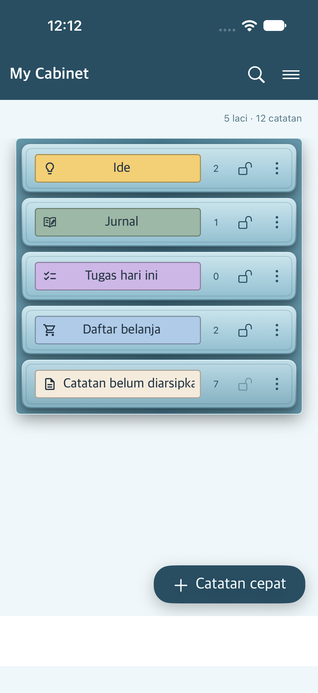
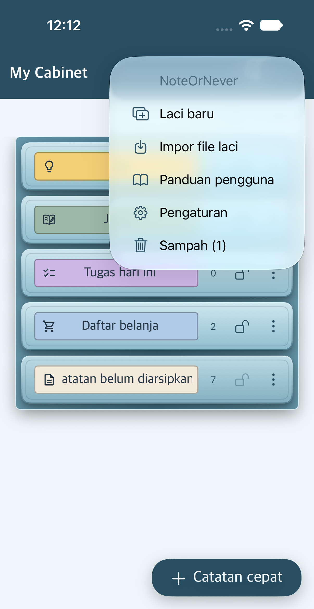
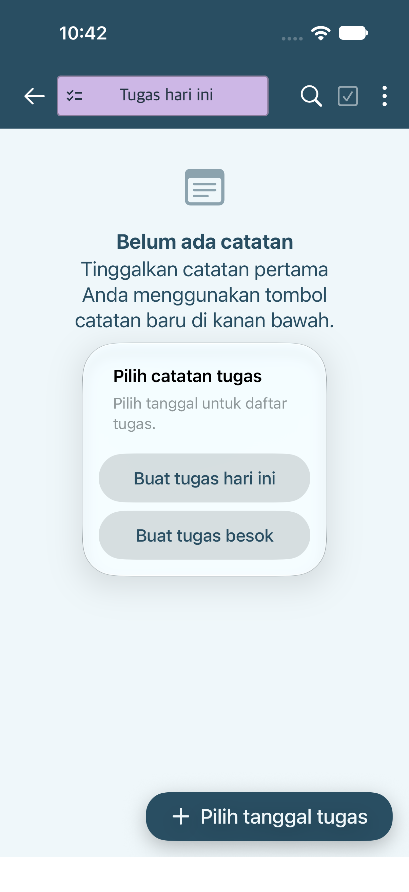
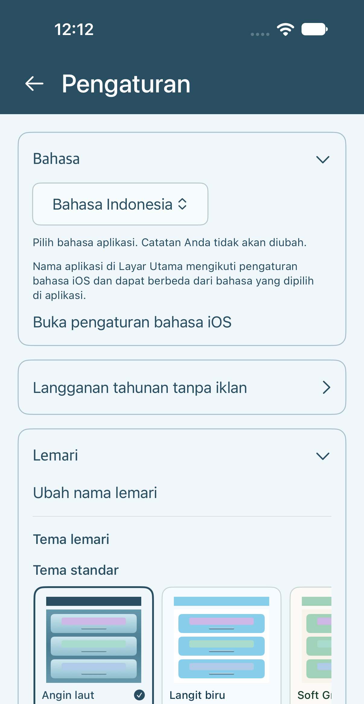

Catat Yuk — Panduan pengguna
Versi 0.9.37
Simpan ide dalam catatan, rencana harian dalam daftar tugas, dan kebutuhan belanja dalam daftar belanja. Anda dapat membuka kembali panduan ini kapan saja melalui kartu “Panduan pengguna” di Pengaturan.
1. Penggunaan pertama dan konfigurasi layar
Catat Yuk adalah aplikasi yang mengumpulkan catatan di laci berdasarkan topik. Saat Anda mengetuk laci, daftar catatan akan terbuka, dan saat Anda mengetuk memo, layar untuk menulis isinya akan terbuka.

Temukan alat di header
Tombol pencarian di atas mencari di semua laci. Menu (☰) berisi Laci baru, Impor laci, Panduan, Pengaturan, dan Sampah. Nama lemari tetap terlihat.

Buat catatan pertama Anda
Pilih menu (☰) → Laci baru, masukkan nama, lalu buka laci untuk membuat catatan. Teks tersimpan otomatis.
Untuk langsung menuliskannya, tekan ＋ Catatan cepat di bagian bawah layar. Anda memulai dengan memo yang tidak diklasifikasikan, dan Anda dapat memilih laci tempat Anda ingin menyimpannya dengan menggunakan nama laci di header memo.
Laci mana yang harus saya gunakan?
| Laci | menggunakan |
|---|---|
| laci biasa | Kami mengumpulkan artikel, foto, gambar, dan file berdasarkan topik, seperti ide, perjalanan, dan pekerjaan. |
| Jurnal | Simpan catatan berdasarkan tanggal dan baca kembali di kalender atau daftar log. |
| Tugas hari ini | Kelola tugas yang harus dilakukan berdasarkan tanggal, waktu, pemberitahuan, jadwal pengulangan, dan status penyelesaian. |
| Daftar belanja | Kelola item, kuantitas, dan status pembelian untuk setiap item belanjaan. |
| Catatan belum diarsipkan | Kumpulkan catatan apa pun yang belum Anda putuskan untuk disimpan di laci. |
Ganti nama lemari berlaci
Buka menu → Pengaturan → Lemari, lalu ubah nama. Gunakan nama tidak kosong hingga 40 karakter. Pilihan tema ada di bawah pada kartu yang sama.
Layar lebar dan layar penuh
Pada layar iPad yang lebar, pilih laci di kiri untuk melihat daftar atau catatan di kanan. Ketuk tombol layar penuh untuk memperluas tampilan.
↑ Ke daftar isi2. Membuat dan mengelola laci
Laci baru memakai warna label yang belum digunakan jika tersedia. Tanda kecil pada warna berarti laci lain sudah memakainya. Anda tetap dapat memilihnya.
Buat laci
Pilih menu (☰) → Laci baru. Untuk berkas laci, pilih Impor laci di menu tersebut.
Ubah nama, warna label, dan ikon
Klik lihat selengkapnya(…) di sisi kanan laci dan pilih Pengaturan laci. Ubah namanya, pilih lingkaran atau ikon berwarna, dan jadikan Simpan. Label menampilkan ikon yang dipilih beserta nama laci. Nama panjang mengalir dalam ruang nama.
Melihat lebih banyak catatan yang tidak dikategorikan secara langsung membuka pengaturan laci. Penguncian dan enkripsi dipandu oleh Bab 11.
Ubah urutan laci
Tekan dan tahan laci dan seret ke atas atau ke bawah ke lokasi yang diinginkan. Lokasi uang kertas yang tidak diklasifikasikan telah ditetapkan.
Hapus laci
Menghapus laci memindahkan catatan ke Sampah dengan mempertahankan laci asal, lampiran, dan waktu penghapusan sebelumnya. Laci terenkripsi memerlukan autentikasi dan tetap terlindungi. Jika laci asal hilang, catatan biasa dipulihkan ke catatan tanpa kategori; catatan terenkripsi ke laci pemulihan dengan ID yang sama. Catatan sampah lainnya tetap di Sampah.
Buat kembali laci khusus
Buku Harian, Agenda Hari Ini, dan Daftar Belanja tetap mempertahankan fungsi eksklusifnya meskipun Anda mengubah nama atau ikon. Laci khusus yang dihapus dapat dibuat di Pengaturan → Laci Khusus. Catatan lama tidak akan secara otomatis dikembalikan ke laci khusus yang baru dibuat.
↑ Ke daftar isi3. Menulis dan mengedit catatan
Catatan baru dan simpan otomatis
＋ Catatan baru di laci membuat catatan di laci saat ini. ＋ Memo cepat dimulai dari memo yang tidak diklasifikasikan, dan sebelum menyimpan untuk pertama kalinya, Anda dapat memilih laci untuk disimpan dengan menekan nama laci di header dan mengonfirmasi dengan tombol pilihan. Saat Anda memilih daftar tugas atau belanja hari ini, daftar tersebut akan berubah menjadi format daftar yang cocok dengan laci tersebut.
Setiap perubahan yang Anda masukkan akan disimpan secara otomatis tanpa tombol simpan. Anda dapat membuka kembali apa yang Anda tulis dengan kembali ke daftar. Tutup saja memo baru tanpa memasukkan apa pun. Untuk menghilangkan catatan Menghapus judul atau isi memo yang sudah disimpan berarti mengedit isinya. itu sendiri, pindahkan ke tempat sampah. Jika pesan kegagalan penyimpanan muncul, periksa informasinya dan coba lagi.
Urutkan daftarnya
Tugas hari ini dan Jurnal diurutkan berdasarkan tanggal catatan, bukan waktu edit. Pilih tanggal terbaru atau terlama dahulu. Tanda penting tidak mengubah urutan tanggal tugas.
Tandai catatan penting
Jika Anda mengklik bintang terang (☆) di sebelah kanan judul, itu akan berubah menjadi bintang terisi (★). Tekan lagi untuk mematikannya. Anda dapat menampilkan catatan penting terlebih dahulu di Pengaturan → Tampilan Catatan. Judul tanggal pada catatan tugas hari ini tidak menampilkan bintang catatan. Bintang setelah item daftar menunjukkan pentingnya tugas atau item tersebut.
Pindah ke laci lain
- Buka catatan biasa dan tekan ikon pindah di sebelah nama laci di header.
- Pilih laci biasa yang ingin Anda pindahkan dan tekan tombol pindah. Pilih saja tidak akan berpindah, dan pembatalan akan mempertahankan laci saat ini. Konfirmasikan ketika diminta untuk mengunci atau menghapus perlindungan.
Catatan dalam Agenda Hari Ini, Daftar Belanja, dan Buku Harian tidak dapat dipindahkan langsung ke laci lain, dan ikon pindahkan tidak ditampilkan. Untuk informasi tentang cara memindahkan beberapa not sekaligus, lihat Pilih beberapa catatan.
Panduan ikon bilah alat pengeditan catatan
Di bawah ini adalah toolbar untuk catatan umum. Ikon lampu saat ini tidak tersedia. Untuk pemformatan font, pertama-tama pilih teks yang akan diubah lalu terapkan. Alat khusus untuk daftar tugas/belanja hari ini dijelaskan di Bab 6 dan Bab 8.
Toolbar atas: Batalkan, Lampirkan, Suara
| ikon | nama | Apa yang kamu lakukan |
|---|---|---|
 | Urungkan | Mengembalikan konten teks yang diubah selama pengeditan saat ini ke keadaan sebelumnya. Jika tidak ada yang dapat dikembalikan, maka akan ditampilkan dalam warna terang. |
| Ulangi | Menerapkan kembali perubahan tubuh yang dikembalikan. Jika tidak ada yang perlu diterapkan kembali, maka akan ditampilkan dalam warna terang. | |
 | kamera | Ambil foto baru dan lampirkan ke memo. |
| Foto | Pilih dan lampirkan foto dari ponsel Anda. | |
 | Gambar | Buatlah gambar di atas kanvas putih dan masukkan ke dalam catatan. |
 | Lampirkan Berkas | Pilih file dan lampirkan ke catatan. Jika Anda mengetuk file terlampir, Anda dapat membukanya dengan aplikasi yang didukung. |
 | masukan suara | Masukkan apa yang Anda katakan dalam surat. Itu ditempatkan di judul atau teks di posisi awal input suara, dan menggantikan karakter yang dipilih jika ada. |
 | Catatan terlampir | Rekam suara atau suara Anda dan lampirkan sebagai file audio. Tidak seperti STT, ini tidak diubah menjadi huruf. |
Toolbar bawah: Format font, daftar, tanggal
| ikon | nama | Apa yang kamu lakukan |
|---|---|---|
 | Berani | Menampilkan teks yang dipilih dalam huruf tebal. Tekan lagi untuk mematikan tampilan tebal. |
 | tip | Memiringkan teks yang dipilih. Tekan lagi untuk mematikannya. |
 | menggarisbawahi | Menggarisbawahi huruf yang dipilih. Tekan lagi untuk mematikannya. |
 | Sorot | Menambahkan latar belakang kuning di belakang teks yang dipilih untuk menekankannya. |
 | Ukuran huruf | Buka menu Ukuran Font dan kecilkan menjadi A− atau besarkan menjadi A+. Pertama pilih karakter yang ingin Anda ubah. |
| warna huruf | Pilih warna font dari hitam, merah, atau biru. | |
 | Spasi baris | Menambah atau mengurangi spasi baris pada isi teks. Ini berbeda dengan fungsi untuk mengubah ukuran font. |
 | Daftar kotak centang | Mengubah baris saat ini menjadi daftar periksa atau membatalkan format daftar periksa. Anda dapat menandai penyelesaian dengan mengklik kotak centang. |
| daftar peluru | Menggantikan baris saat ini dengan daftar yang dimulai dengan titik. | |
 | Daftar bernomor | Menggantikan baris saat ini dengan daftar nomor. Nomor untuk item berikutnya berlanjut secara otomatis. |
 | stempel waktu | Menyisipkan tanggal dan waktu saat ini pada posisi kursor dalam teks. |
Saat Anda menempatkan kursor pada judul, toolbar pemformatan teks disembunyikan, dan muncul kembali saat Anda mengklik teks. Jika layar Anda sempit, Anda dapat menggeser toolbar ke kiri atau kanan untuk melihat alat lainnya. Dalam layar penuh, Anda dapat menggeser toolbar ke atas atau ke bawah.
Hanya satu format di antara kotak centang, poin, atau daftar nomor yang diterapkan pada satu baris. Formatnya berubah ketika Anda menekan tombol daftar yang berbeda. Saat Anda menekan Enter di daftar nomor, nomor berikutnya akan berlanjut, dan saat Anda menekan Enter pada item kosong, daftar akan berakhir. Batasan judul, isi, dan lampiran dapat diperiksa di Batasan kapasitas dan panjang.
↑ Ke daftar isi4. Lampirkan dan bagikan foto, gambar, dan file
Sisipkan foto, rekaman, dan file
Dari toolbar atas memo umum, pilih Kamera, Foto, Cat, Lampirkan File, Lampirkan Rekaman. Izinkan izin perangkat yang diperlukan dan ambil gambar atau pilih file. Silakan merujuk ke Catatan mengedit informasi toolbar untuk mengetahui fungsi masing-masing alat dan perbedaan lampiran input/rekaman suara.
Ubah lokasi foto dan gambar
Ubah posisinya dengan mengklik Lainnya (…) di pojok kanan atas foto → Pindah ke atas atau pindah ke bawah. Anda juga dapat menekan lama foto dan menyeretnya ke atas atau ke bawah. Garis yang ditampilkan adalah tempat Anda meletakkannya, dan garis itu akan bergulir secara otomatis saat Anda menyeretnya ke tepi layar. Saat sedang mengedit, Anda dapat mengembalikan perpindahan dengan Undo.
Pindahkan lampiran ke catatan lain
- Foto, gambar, rekaman, dan file umum yang akan dipindahkan… Di menu, ketuk Pindahkan ke catatan lain.
- Pilih laci biasa yang berisi catatan yang ingin Anda terima. Buka kunci atau dekripsi jika perlu.
- Pilih catatan yang ingin Anda terima dan tekan Mulai. Anda juga dapat menemukan judul catatan dengan mencari.
Pindahkan satu lampiran setiap kali. Lampiran dihapus dari catatan asal dan ditambahkan di akhir catatan tujuan. Laci khusus, termasuk Buku harian, Tugas hari ini, Daftar belanja, dan Cadangan, tidak dapat menjadi asal atau tujuan. Saat memindahkan dari laci terenkripsi ke laci tanpa enkripsi, periksa pemberitahuan tentang perubahan perlindungan. Jika pemindahan atau autentikasi dibatalkan, lampiran tetap berada di catatan asal.
Selama catatan asal masih terbuka, gunakan Urungkan pada bilah alat atas untuk mengembalikan lampiran ke posisi semula, lalu Ulangi untuk memindahkannya lagi. Perubahan sebelumnya tetap ada dalam riwayat. Anda mungkin diminta membuka kunci atau melakukan autentikasi enkripsi lagi. Jika autentikasi dibatalkan atau proses gagal, kedua catatan tetap seperti semula dan Anda dapat mencoba lagi nanti. Menutup catatan menghapus riwayat pembatalan sesi penyuntingan tersebut.
Lihat lebih besar dan putar
Klik pada foto atau gambar untuk membukanya lebih besar. Gunakan dua jari untuk memperbesar atau memperkecil, atau ketuk dua kali untuk memperbesar. Jika Anda mengubah arah dengan tombol rotasi dan menyimpannya, Lampiran yang ada di catatan akan diganti dengan gambar yang diputar. tidak akan disimpan dan jika Anda menutupnya, rotasi tidak akan diterapkan. Itu tidak akan mengubah galeri asli di ponsel Anda.
Menggambar dan Menandai Foto
- Gambar kosong dimulai dengan Paint di toolbar atas. Untuk menampilkannya di atas foto, buka lebih besar dan ketuk Edit.
- Pilih warna, atur ketebalan pena menggunakan penggeser di bawah, dan gambar di kanvas.
- Saat Anda mengaktifkan Penghapus, penggeser berubah sesuai ukuran penghapus. Matikan kembali penghapus atau pilih warna untuk dikembalikan ke pena.
- Sesuaikan goresan gambar saat ini dengan Undo/Redo.
- Jika gambar kosong sudah selesai, pengeditan foto akan dilampirkan ke catatan saat Anda mengklik Simpan sebagai salinan. Menutup dengan X kiri dan membuang perubahan tidak akan menyimpannya.
Jika Anda menimpa foto dan menyimpannya, Salinan lampiran baru ditambahkan dan lampiran yang ada tetap ada. Jika Anda tidak menyukai salinan yang Anda simpan, hapus salinan tersebut. Setelah disimpan, coretan salinan tersebut tidak dapat dihapus dengan mengembalikan pengeditan sebelumnya. Resolusi mungkin berkurang selama proses pengeditan/pemutar dan penyimpanan, jadi simpanlah dokumen asli beresolusi tinggi secara terpisah.
Anda juga dapat melihat manual read-only dan foto dari buku harian sebelumnya dalam format yang lebih besar. Layar yang diperbesar dalam keadaan read-only hanya menampilkan tombol close.
Bagikan sebagai PDF
- Buka catatan dan tekan tombol Bagikan di header.
- Di jendela berbagi iOS, pilih aplikasi dan penerima yang diinginkan, seperti KakaoTalk.
Kirim judul, isi, format teks, foto, dan gambar sebagai PDF. Penerima dapat membacanya tanpa Catat Yuk. File yang direkam dan umum hanya menampilkan nama dan jenisnya, dan file asli tidak disertakan dalam PDF. Jika Anda menutup jendela berbagi, itu tidak akan terkirim. PDF yang dikirim adalah salinan pada saat dibagikan dan tidak mencerminkan pengeditan berikutnya pada catatan tersebut.
↑ Ke daftar isi5. Buatlah buku harian
Lanjutkan rekor hari ini
Saat aku membuka laci buku harian, aku terus menulis catatan hari ini. Tanggal ditampilkan secara otomatis dan judul pendek dapat ditulis secara terpisah. Saat pertama kali Anda memasukkan informasi, informasi tersebut disimpan, dan catatan kosong tidak dibuat selama hari-hari ketika Anda tidak mencatat apa pun.
Membaca dan mengedit catatan masa lalu
Pilih hari dengan catatan dari ikon kalender atau buka dari daftar catatan. Catatan masa lalu hanya dapat dibaca, namun Anda dapat memperbesar foto, menandainya sebagai penting, membagikannya, dan memindahkannya ke sampah.
Saat Anda menekan Buka Kunci Edit, kami akan memandu Anda memahami apa artinya menyimpan catatan hari itu. No menjadikannya hanya-baca, dan Edit memungkinkan pengeditan rekaman yang sedang terbuka. Jika saya menutupnya dan membukanya kembali, statusnya kembali hanya-baca. Bahkan setelah tengah malam, rekaman yang telah Anda tulis dapat disimpan hingga Anda menutup layar.
Buku harian tidak langsung dipindahkan ke laci lain. Bahkan jika Anda memulihkannya dari Recycle Bin, tanggal riwayatnya akan tetap ada. Untuk mengganti nama dan membuat ulang laci, lihat Membuat dan mengelola laci.
↑ Ke daftar isi6. Pengaturan tugas, waktu, pemberitahuan, dan pengulangan hari ini
Buat daftar hari ini atau besok dan pulihkan daftar terhapus
Jika kedua tanggal belum memiliki daftar, gunakan ＋ untuk memilih hari ini atau besok. Jika hanya satu tanggal yang belum ada, hanya tombol tanggal itu yang muncul; jika keduanya sudah berisi, tombol disembunyikan. Kotak centang kosong tidak dihitung, tetapi lampiran dihitung. Filter pencarian tidak mengubah aturan ini. Membuat daftar besok tidak memindahkan tugas hari ini lebih awal.

Menghapus daftar bertanggal menyimpan aslinya dan lampiran di Sampah. Pengulangan dan pemindahan otomatis tidak membuat ulang tanggal yang dihapus. Membuat secara manual memulai daftar baru. Jika daftar lain untuk tanggal itu sudah ada, pindahkan ke Sampah sebelum memulihkan aslinya. Konflik tetap terpilih dalam pemulihan sekaligus. Daftar lama yang tertimpa hanya dipulihkan jika ada bukti lokal; hanya berkas lampiran yang masih ada yang dapat disalin.
Tambahkan/selesai/tandai item sebagai penting
- Tambahkan barang (+): Tambahkan tugas baru. Anda juga dapat menulis nama item dan tekan Enter untuk melanjutkan item berikutnya.
- kotak centang: Perubahan selesai dan tidak lengkap. Item yang sudah selesai akan dicoret.
- Lihat item lainnya di sebelah kanan (…): Pengaturan Waktu Buka·Pengaturan Pemberitahuan·Pengaturan Ulang·Tanda Prioritas·Hapus Item.
- Beri bintang pada catatan: Mengaktifkan atau menonaktifkan penyorotan di menu item. Item penting ditandai dengan bintang. Terpisah dari bintang pada judul tanggal.
- Hapus item: Menghapus hanya satu baris yang dipilih. Menghapus item yang berulang juga akan menghentikan pengulangan di masa mendatang. Bedakan dari tombol tempat sampah di header, yang menghapus seluruh catatan.
Untuk mengaturnya dengan alat teratas, pertama-tama tempatkan kursor dengan mengklik huruf item yang akan diubah. Tombol jam, bel, dan ulangi berlaku untuk item saat ini. Alat yang tidak tersedia berwarna abu-abu. Jika Anda tidak dapat melihat semua alat, coba geser toolbar ke kiri atau ke kanan.
Susun ulang item
Aktifkan Mode pergerakan untuk item dengan panah atas dan bawah yang tumpang tindih di bagian atas. Tekan dan tahan pengendali gerakan yang muncul di sebelah item dan seret ke atas atau ke bawah. Setelah selesai bergerak, tekan lagi tombol yang sama untuk kembali ke mode menulis.
Tetapkan waktu yang dijadwalkan
- Di sebelah kanan item... → Tekan Atur waktu. Cara lainnya, arahkan kursor ke item dan tekan tombol jam atas.
- Tetapkan waktu dan konfirmasi. Item akan menampilkan waktu yang dijadwalkan.
- Untuk menghilangkannya, buka lagi Pengaturan Waktu dan ketuk Tanpa waktu.
Menyetel waktu saja tidak memicu notifikasi. Jika Anda menginginkan notifikasi, atur secara terpisah.
Dapatkan notifikasi
- Di sebelah kanan item... → Tekan Pengaturan pengingat.
- Jika Anda memiliki waktu yang dijadwalkan, pilih notifikasi pada jam, 10 menit sebelumnya, atau 30 menit sebelumnya. Jika Anda tidak memiliki waktu yang dijadwalkan atau ingin menerimanya pada waktu terpisah, gunakan Pilih waktu pengingat.
- Menyimpan. Jika perangkat Anda meminta izin notifikasi, berikan saja. Saat Anda menerima instruksi izin notifikasi yang benar, periksa juga pengaturan perangkat.
Titik waktu yang dipilih ditampilkan dalam lingkaran di sebelah kiri. Izin yang diperlukan dan tindakan pemberitahuan dijelaskan di bawah daftar pilihan. Untuk mematikannya, pilih Tanpa pengingat. Jika Anda menghapus waktu yang dijadwalkan, notifikasi berdasarkan waktu tersebut juga akan dinonaktifkan. Waktu notifikasi yang Anda tentukan dikelola secara terpisah. Pemberitahuan yang disetel untuk item berulang juga akan berlaku untuk pengulangan di masa mendatang.
Notifikasi menampilkan instruksi konfirmasi, bukan konten agenda. Kedatangan mungkin tertunda tergantung pada notifikasi perangkat Anda dan pengaturan hemat daya. Notifikasi acara kalender dan notifikasi aplikasi terpisah, jadi harap periksa juga Bab 7.
Apa yang terjadi pada item yang tidak lengkap?
Tugas belum selesai tanpa pengulangan atau tautan kalender pindah ke hari berikutnya. Kepentingan, waktu, pengingat, jumlah, dan hitungan pemindahan dipertahankan. Tugas baru dengan nama sama tetap terpisah. Tugas selesai, berulang, riwayat pemindahan, dan lampiran tetap di hari asal. Tanggal yang dihapus tidak dibuat ulang otomatis.
Buat tugas yang dapat diulang
- Tulis nama item dan… → Tekan Ulangi tugas.
- Pilih dari Pilih harian, hari kerja, akhir pekan, hari dalam seminggu. Dalam pemilihan hari, Anda dapat memilih beberapa hari dalam seminggu.
- Tekan Simpan. Anda dapat mengubah pengaturan item dengan membukanya kembali.
Misalnya, jika Anda hanya memilih hari Kamis, Anda akan memiliki item baru yang belum selesai setiap hari Kamis. Ulangi terlepas dari apakah itu selesai terakhir kali.
- Periksa penyelesaian adalah tanda selesainya hari itu. Setelah itu, iterasi dilanjutkan.
- Ubah nama, hari dalam seminggu, dan tanda penting mencerminkan item berulang yang tidak lengkap setelah hari ini. Memelihara catatan masa lalu dan item yang sudah selesai.
- Jangan mengulang atau menghapus item membatalkan iterasi di masa depan dan juga menghapus entri iterasi tidak lengkap di masa depan yang telah dibuat sebelumnya.
- Saat Anda membuka aplikasinya beberapa hari kemudian, aplikasi tersebut dilengkapi dengan apa yang Anda butuhkan saat ini. Itu tidak membuat daftar semua tanggal yang lalu dengan hanya pengulangan.
Barang-barang yang berulang tidak dibawa ke hari berikutnya seperti barang-barang biasa yang belum selesai. Jadwal berulang yang dibuat secara terpisah dengan nama yang sama dikelola secara terpisah. Item yang ditautkan ke kalender tidak dapat diubah menjadi tugas berulang.
↑ Ke daftar isi7. Hubungkan dengan kalender ponsel Anda
Gunakan acara dari kalender yang terhubung ke ponsel Anda. Anda harus mengizinkan akses kalender, lalu memilih kalender yang muncul dalam daftar. Integrasi langsung dengan Kalender Naver tidak disediakan.
| fungsi | Apa pekerjaanmu? |
|---|---|
| Tambahkan ke kalender | Kirim tugas Catat Yuk ke kalender Anda. Pembaruan di masa mendatang akan mengubah jadwal kalender. |
| Impor dari kalender | Impor acara hari ini dari kalender Anda ke Tugas Hari Ini. Pembaruan kalender selanjutnya akan menggantikan entri untuk Catat Yuk. |
Mendaftarkan tugas yang harus dilakukan di kalender
- Tempatkan kursor pada item yang ingin Anda kirimkan di Hari Ini atau Besok dan ketuk ikon Posting ke Kalender dengan panah di bagian atas.
- Periksa dan daftarkan kalender, tanggal, ketersediaan sepanjang hari, waktu mulai dan berakhir, serta notifikasi.
- Setelah mengedit agenda, memperbaruinya dari tombol yang sama akan mengubah jadwal terhubung yang ada.
Indikator tautan muncul pada item yang terdaftar. Tugas berulang tidak dapat dikirim ke kalender. Meskipun Anda menyelesaikan, menghapus, atau memindahkan tugas ke hari berikutnya, acara kalender yang sudah terdaftar akan tetap dipertahankan. Untuk menghapus acara kalender, gunakan aplikasi kalender.
Dapatkan acara hari ini dari kalender Anda
- Buka daftar tugas Anda untuk tanggal hari ini dan ketuk Impor ikon dengan kalender dan panah kiri di toolbar atas. Jika Anda tidak dapat melihat semua alat, coba geser toolbar ke kiri atau ke kanan.
- Pilih kalender dan periksa serta impor item yang diperlukan dari jadwal hari ini.
- Untuk menampilkan kembali konten terbaru, arahkan kursor ke item dan ketuk ikon kalender di bagian atas. Periksa judul, waktu, lokasi, dan kalender pratinjau, lalu tekan Perbarui di kalender.
Anda dapat memeriksa judul, waktu, lokasi, dan informasi kalender dari jadwal yang diimpor. Waktu ditampilkan terpisah dari judul, dan acara sepanjang hari ditampilkan sebagai sepanjang hari. Jadwal yang sudah terhubung tidak akan diimpor sebagai duplikat. Acara berulang di kalender hanya mengambil episode hari ini. Pemeriksaan penyelesaian hanya dikelola oleh Catat Yuk.
↑ Ke daftar isi8. Gunakan daftar belanjaan
- Buat catatan baru di laci daftar belanjaan dan beri nama item belanjaan tersebut.
- Masukkan nama item dan tekan jumlah (×angka) setelah item.
- Atur jumlahnya menggunakan tombol −·＋ atau memasukkan angka. Standarnya adalah 1 dan masukan dari 1 hingga 9999.
- Setelah Anda membeli item tersebut, klik kotak centang di depannya. Silakan memberi bintang pada barang yang harus Anda beli.
Anda dapat membuat beberapa daftar untuk setiap item belanjaan. Untuk informasi tentang menambahkan item dan mode perpindahan, lihat Alat daftar tugas hari ini. Tombol kuantitas, bintang, dan hapus tersedia tepat di belakang item belanja. Daftar belanja tidak memiliki pengaturan berulang. Untuk petunjuk penggunaan widget, silakan merujuk ke Menggunakan widget layar beranda.
↑ Ke daftar isi9. Menggunakan widget layar beranda
Tambahkan widget
Sentuh dan tahan area kosong di Layar Utama. Buka galeri widget dari menu edit, cari NoteOrNever, lalu tambahkan widget tugas hari ini atau daftar belanja.
Apa yang dapat Anda lakukan di widget
- Saat Anda menekan baris item, itu berubah antara selesai/tidak lengkap atau dibeli/belum dibeli.
- ＋ membuka layar tambah cepat aplikasi untuk memasukkan item ke dalam daftar itu.
- Ketuk judul atau buka catatan untuk membuka catatan itu di aplikasi.
- Ikon asterisk/ulangi hanya untuk tujuan tampilan. Penandaan penting, pengulangan, kuantitas, dan perubahan pesanan dilakukan di aplikasi.
Widget Tugas Hari Ini menampilkan daftar untuk tanggal hari ini, dan widget Belanja menampilkan daftar aktif yang terakhir diubah. Hitungan sisa merupakan jumlah barang yang belum lengkap dan bukan merupakan penjumlahan dari kuantitas barang.
urutan tampilan
Urutannya Tidak Lengkap Penting → Umum Tidak Lengkap → Selesai Penting → Umum Lengkap. Mempertahankan urutan asli item dalam bundel yang sama. Penyortiran widget tidak mengubah urutan dalam catatan.
Widget untuk laci terkunci
Saat Anda mengunci laci, widget menyembunyikan isinya. Meskipun Anda mengautentikasi dengan aplikasi dan membukanya sebentar, widget tetap tersembunyi. Buka aplikasi untuk memeriksa isinya, atau buka kunci laci untuk menampilkannya lagi di widget. Pemrosesan tanggal untuk item berulang berlanjut selama penguncian.
↑ Ke daftar isi10. Mencari catatan dan mengelola Recycle Bin
jangkauan pencarian
| Temukan lokasi tombol | Apa yang harus dicari |
|---|---|
| lemari laci tinggi | Nama beberapa laci dan judul/badan memo |
| Di dalam laci | Judul dan isi catatan di laci saat ini |
| Dalam catatan itu | Cocok dengan karakter dari isi catatan saat ini |
Ketuk kaca pembesar di laci, masukkan istilah pencarian, lalu ketuk laci atau catatan di hasil. Di laci, hanya catatan dengan istilah pencarian yang tersisa dalam daftar. Di dalam catatan, huruf yang cocok disorot dan isinya tetap tidak berubah. X menutup Temukan. Untuk menemukan panduannya, silakan merujuk ke Menggunakan manual.
Laci yang terkunci dikecualikan dari target pencarian default. Mencari isi laci yang terkunci Anda dapat memasukkannya dengan mengautentikasi dengan mengklik Sertakan (memerlukan otentikasi). Konten terenkripsi juga dicari setelah otentikasi.
Pilih beberapa catatan
- Tekan tombol Pilih (tanda centang) di header laci.
- Pilih catatan yang ingin Anda proses dari daftar.
- Ketuk Pindahkan Laci atau Pindahkan ke Sampah di bagian bawah. Saat memindahkan laci, pilih tujuan dan konfirmasikan dengan tombol pindah. Hanya uang kertas biasa yang dapat dipindahkan yang dapat dipindahkan ke laci lain.
Jika Anda melihat Urungkan dalam petunjuk di bawah setelah tindakan, Anda dapat mengetuknya untuk mengembalikan tindakan yang baru saja Anda lakukan. Waktu tampilan default adalah sekitar 5 detik dan bisa lebih lama tergantung pada pengaturan aksesibilitas Anda. Tekan Kembali untuk menyelesaikan pilihan Anda.
Pindahkan catatan ke tempat sampah
Tekan tombol Pindah ke Sampah di header edit catatan dan konfirmasi. Tombol ini dinonaktifkan untuk catatan kosong tanpa judul, isi, atau lampiran. Tanda X setelah item menghapus satu baris, dan tempat sampah di header memo menghapus seluruh memo.
Pulihkan dari Recycle Bin
- Ketuk tempat sampah di header meja rias.
- Di sisi kiri garis dengan tombol Pulihkan/Hapus Permanen untuk kartu catatan, periksa ikon dan nama laci asli. Tekan Pulihkan pada catatan yang ingin Anda hidupkan kembali. Jika perlu, buka catatan terlebih dahulu untuk memeriksa isinya.
- Periksa catatan yang dipulihkan di laci milik aslinya. Saat menghapus laci, catatan yang dipindahkan ke catatan tidak terklasifikasi dapat diperiksa di catatan tidak terklasifikasi.
Untuk melihat catatan laci terkunci, autentikasi dengan Sertakan catatan laci terkunci (diperlukan autentikasi) di atas. 30 hari setelah dipindahkan ke Recycle Bin, itu akan terhapus secara otomatis dan permanen beserta lampirannya. Tergantung pada kondisi perangkat, pembersihan mungkin tertunda. Jika Anda memulihkannya sebelum 30 hari, maka akan dikecualikan dari pembersihan, dan jika Anda memindahkannya kembali ke Keranjang Sampah, maka akan dihitung lagi sejak saat itu.
↑ Ke daftar isi11. Kunci dan enkripsi laci
Mengubah atau mereset kata sandi mengakhiri sesi sebelumnya. Sesi baru memakai kunci enkripsi yang sama, mempertahankan catatan dan lampiran serta sinkronisasi dengan perangkat lain. Hubungkan ulang biometrik. iOS tidak menimpa konfigurasi enkripsi yang sudah ada saat memasang informasi pemulihan.
| Metode perlindungan | perbedaan |
|---|---|
| Kunci laci | Mencegah pengguna membuka konten di aplikasi menggunakan sidik jari atau autentikasi PIN 4 digit. |
| Enkripsi laci | Judul, isi, dan lampiran memo dienkripsi dan disimpan, dan data tetap terenkripsi bahkan di cadangan dan keranjang sampah. |
Enkripsi tidak diterapkan pada laci cadangan yang menyimpan daftar tugas hari ini, daftar belanja, memo yang tidak dikategorikan, dan data aplikasi lainnya. Simpan catatan pribadi penting di laci biasa yang dapat dienkripsi. Anda dapat menggunakan kunci default untuk daftar tugas dan belanja hari ini.
kunci laci dasar
Di Pengaturan → Kunci laci, atur PIN, penggunaan sidik jari, dan jeda penguncian otomatis setelah beralih dari aplikasi. Ketuk gembok terbuka untuk mengunci laci. Ketuk laci yang terkunci dan lakukan autentikasi untuk membukanya. Untuk perilaku widget, lihat Menggunakan widget layar beranda.
Menyiapkan enkripsi untuk pertama kalinya
- Untuk laci umum yang ingin Anda lindungi, ketuk Lainnya → Enkripsi laci.
- Masukkan kata sandi enkripsi Anda dua kali (setidaknya sepanjang 12 karakter) dan ketuk Atur Kata Sandi. Kata sandi ini berbeda dengan PIN kunci 4 digit.
- Simpan kunci pemulihan yang ditampilkan di tempat yang aman di luar aplikasi, seperti di atas kertas atau di pengelola kata sandi.
- Centang Konfirmasi Penyimpanan dan klik Setel Kata Sandi untuk menyelesaikan.
- Saat diminta bahwa laci ini belum dienkripsi, klik Aktifkan enkripsi untuk menerapkan.
Otentikasi dan terapkan perlindungan untuk setiap laci lainnya di Lainnya → Enkripsi Laci. Kotak enkripsi menggunakan kata sandi yang sama, jadi gunakan kata sandi dan kunci pemulihan yang Anda tetapkan sebelumnya. Jika Anda membatalkan sebelum menyelesaikan penyiapan, jangan gunakan kunci pemulihan yang Anda lihat saat itu.
Lencana perisai dan tanda kunci
Perisai merah, lencana centang putih di sudut kanan atas label laci dan label judul di dalam laci menunjukkan bahwa enkripsi telah diterapkan pada laci tersebut. Meskipun Anda mengautentikasi dan membuka konten, lencana tidak akan hilang karena enkripsi tetap terjaga. Kunci berarti laci yang harus dibuka setelah otentikasi, dan perisai berarti data dienkripsi dan disimpan.
Pembukaan laci normal dan penguncian otomatis
Buka laci terenkripsi dengan kata sandi enkripsi atau Face ID atau Touch ID yang ditautkan pada perangkat ini. Laci terkunci lagi saat Anda keluar.
Menautkan biometrik atau mengubah kata sandi
Buka enkripsi laci di Pengaturan untuk menautkan biometrik perangkat ini atau mengubah kata sandi. Jika Face ID atau Touch ID didaftarkan ulang, buka laci dengan kata sandi enkripsi lalu tautkan kembali.
Perubahan kata sandi berlaku untuk semua laci terenkripsi. Cadangan sebelum perubahan tetap memerlukan kata sandi yang digunakan saat cadangan dibuat. Buat cadangan baru setelah mengubah kata sandi.
Ketika Anda lupa kata sandi Anda
- Ketuk Lupa kata sandi Anda? di layar autentikasi.
- Masukkan kunci pemulihan tersimpan dan kata sandi baru, setel ulang kata sandi Anda, dan tekan Buka.
Kata sandi baru berlaku untuk semua laci terenkripsi. Batal akan mengembalikan layar autentikasi. Aplikasi tidak menampilkan kunci pemulihan lagi, jadi catat dengan benar saat penyiapan awal.
Hapus perlindungan enkripsi dan hapus laci
Di laci, buka Lainnya → Dekripsi laci, autentikasi, periksa nama laci, dan tekan Buka proteksi. Data di laci yang dipilih akan disimpan tidak terenkripsi. Jika Anda membatalkan, Anda akan tetap mendapatkan perlindungan. Untuk menghapus laci, setelah membuka proteksinya, pilih Hapus Laci dari Lainnya.
Periksa cakupan perlindungan
- Nama laci, jumlah catatan, tanggal pembuatan dan modifikasi, serta jenis lampiran tidak dienkripsi. Jangan sertakan konten sensitif dalam nama laci.
- Ini bukan fitur yang mengenkripsi seluruh cadangan. Hanya isi laci terenkripsi yang dilindungi; laci biasa dan daftar tugas/belanja hari ini tidak dienkripsi.
- Cadangan yang dibuat sebelum enkripsi atau salinan yang dikirim ke aplikasi eksternal tidak dienkripsi secara otomatis. Kelola sendiri file yang dibagikan secara eksternal.
12. Cadangkan/Pulihkan dan Impor Evernote
Pindah ke perangkat baru
Hanya ada cadangan
Pilih cadangan terbaru. Pemulihan akan mengganti catatan dan lampiran di perangkat ini. Simpan dahulu data yang ingin dipertahankan ke berkas sebelum mengonfirmasi.
Hanya ada data sinkronisasi
Hubungkan akun yang sama seperti di perangkat lama. Di Sinkronisasi → Detail, pilih pemulihan dari data sinkronisasi untuk mengunduh tanpa mengirim perubahan lokal.
Keduanya tersedia
Pulihkan cadangan dahulu. Sinkronkan sekarang hanya jika perangkat lain menyinkronkan perubahan setelah cadangan dibuat.
Terakhir, cari catatan dari perangkat lama dan buka lampirannya.
Sinkronisasi otomatis dan pemulihan tanpa unggahan
Ketuk status di kiri untuk melihat penyebab dan langkah berikutnya. Pada layar sempit mungkin hanya ikon yang terlihat. Status tersembunyi dalam mode gratis.
Membaca status sinkronisasi
Dua catatan berbeda tetap disimpan terpisah walau lampirannya sama. Jika cadangan dibuat sebelum sinkronisasi pertama dan isinya berbeda dengan server, kedua versi dapat disimpan. Buka keduanya sebelum memilih mana yang dihapus.
Pembatasan permintaan sementara akan dicoba ulang. Kosongkan penyimpanan cloud jika penuh atau hubungkan kembali akun asal jika izin dicabut. Lampiran rusak dicoba dipulihkan dari server. Catatan terkait dapat ditunda sementara yang lain tetap disinkronkan. Perubahan tanpa urutan yang jelas bisa menghasilkan salinan konflik.
Sinkronisasi biasa mengisolasi semua revisi ID catatan dan laci yang saat ini dilindungi, termasuk perpindahan dan penghapusan lama, sambil melanjutkan data biasa lainnya. Riwayat yang diisolasi dan perubahan yang belum dikirim tetap disimpan di perangkat. Jika autentikasi enkripsi kedaluwarsa saat menerbitkan informasi pemulihan, antrean dipertahankan; autentikasi ulang lalu sinkronkan untuk mencoba lagi. Kegagalan verifikasi pemulihan yang sebenarnya tetap ditampilkan sebagai kesalahan.
Pemulihan tidak mengunggah catatan, lampiran, atau informasi pemulihan. Edit dan perubahan tertunda tetap di perangkat dan dapat dikirim saat menyinkronkan nanti.
Aktifkan atau nonaktifkan sinkronisasi otomatis di bagian Sinkronisasi. Sinkronkan sekarang berjalan sekali tanpa mengubah pengaturan itu. Pemulihan khusus unduhan tidak mengirim perubahan lokal.
Jika informasi pemulihan terenkripsi tersedia, verifikasi dengan kata sandi atau kunci pemulihan, atau pulihkan data biasa saja. Status informasi pemulihan di Drive terpisah dari pengiriman catatan. Menghentikan operasi menyimpan tahap selesai dan perubahan belum terkirim. Jalankan lagi operasi yang sama untuk melanjutkan. Periksa isi setelah kegagalan penyimpanan dan selesaikan pengeditan serta penyimpanan sebelum mencoba lagi.
Cadangkan dan pulihkan ke file lokal
- Buka Pencadangan dan Pemulihan Lokal di bagian bawah Pengaturan.
- Ketuk Simpan File Cadangan dan pilih folder dan nama file untuk disimpan di aplikasi File. .nonbackup Menyimpan laci, memo, sampah, pengaturan, dan file terlampir bersama-sama dalam satu file.
- Ketuk Pulihkan dari File dan pilih file cadangan yang disimpan. Periksa tanggal, nomor laci, catatan, lampiran, dan instruksi penggantian.
- Mengklik Pulihkan akan mengganti data saat ini dengan konten cadangan. Ini bukan operasi untuk menggabungkan dengan data saat ini. Jika Anda membatalkan, itu tidak akan berlaku.
- Status sesaat sebelum pemulihan disimpan di perangkat. Anda dapat kembali mengembalikan pemulihan terakhir Anda.
Cadangan berkas dapat digunakan tanpa menghubungkan akun. Di File pilih Di iPhone Saya, Di iPad Saya, atau iCloud Drive. Tetapkan PIN untuk memulihkan laci terkunci dan simpan kata sandi atau informasi pemulihan konten terenkripsi.
Pencadangan iCloud / Google Drive adalah pencadangan manual
Buka Pengaturan → Koneksi cloud → Pencadangan dan pemulihan cloud. Untuk menyimpan, ketuk tombol cadangan layanan yang dipilih. Untuk memulihkan, muat daftar dan periksa tanggal serta jumlah catatan sebelum memilih.
Laci, memo, lampiran, pengaturan pengulangan, dan catatan yang tersisa di tempat sampah juga disertakan dalam cadangan. Setelah melakukan perubahan besar dan sebelum mengganti ponsel, buat cadangan baru dan ikuti petunjuk untuk menyelesaikannya.
Penyimpanan dan penghapusan cadangan
Setelah cadangan baru berhasil diunggah dan dikonfirmasi, cadangan lama akan dihapus secara otomatis dan permanen, menyisakan lima cadangan terbaru. Pencadangan yang gagal tidak menghapus cadangan yang ada. Kriteria retensinya bukanlah jangka waktu tetapi nomornya, jadi jika Anda sering melakukan pencadangan, kelimanya bisa saja terbaru.
Untuk menghapusnya secara manual, buka daftar dengan Pulihkan dari Cadangan dan tekan Hapus untuk cadangan yang ingin Anda hapus. Setelah Anda mengonfirmasi nama file dan menghapusnya secara permanen, file tersebut tidak dapat dipulihkan. Catatan di ponsel Anda saat ini tidak akan terhapus. Untuk pencadangan jangka panjang, simpan secara terpisah sebelum pembersihan otomatis.
Memulihkan dari cadangan
Impor catatan Evernote
- Di aplikasi Evernote di PC Anda, ekspor catatan atau buku catatan yang ingin Anda pindahkan ke ENEX (.enex). Jika ada enkripsi badan, nonaktifkan terlebih dahulu.
- Salin file ENEX ke folder unduhan di ponsel Anda, dll.
- Pilih file dari Pengaturan → Impor catatan Evernote → Pilih file ENEX.
- Periksa judul dan nomor di pratinjau dan klik Impor Evernote Note.
- Periksa dan buat cadangan konten dan lampiran di laci memo yang diimpor dari Evernote.
Dapatkan judul, isi, tanda centang, format dasar, lampiran, dan tanggal pembuatan/modifikasi. Tag dan alamat asli ditampilkan di akhir teks. Tabel atau format yang kompleks mungkin berbeda dan struktur pemberitahuan, tugas, dan buku catatan tidak akan dikonversi secara otomatis. Atur catatan yang diperlukan di laci biasa lainnya.
Duplikat materi yang sama akan dilewati, namun materi dengan konten yang diubah atau tanggal revisi dapat ditambahkan sebagai catatan terpisah. Itu tidak secara otomatis menyinkronkan dengan Evernote atau menimpa catatan yang ada. Catatan asli dan file ENEX tidak akan dihapus. Jika file berukuran besar atau gagal, bagi menjadi beberapa bagian yang lebih kecil dan uji terlebih dahulu. Format yang didukung adalah ENEX dan batasnya adalah Batasan kapasitas dan panjang.
Silakan pilih bahan yang Anda miliki atau izin impornya Anda miliki. Impor diproses di dalam perangkat, dan saat Anda menjalankan pencadangan iCloud / Google Drive, data yang diimpor juga disertakan dalam cadangan. File ENEX asli tidak dilindungi oleh enkripsi laci, jadi jagalah salinan Anda juga. Fungsi ini bukan fungsi kemitraan/otentikasi resmi Evernote. Evernote® adalah merek dagang dari Bending Spoons US Inc..
↑ Ke daftar isi13. Menggunakan pengaturan dan manual aplikasi
Batas gratis adalah tujuh laci termasuk laci bawaan. Saat mencapai tujuh, pembuatan dan impor laci dibatasi. Premium menghapus iklan serta mendukung laci tambahan, enkripsi baru, dan transfer cloud. Setelah langganan berakhir, laci lama tetap dapat dibuka dan data terenkripsi tetap dapat dibaca atau didekripsi.
Di Pengaturan, buka Koneksi cloud. Pilih iCloud untuk perangkat Apple atau Google Drive untuk menyertakan Android. Premium menghubungkan satu layanan setiap saat. Gunakan Pencadangan dan pemulihan cloud untuk cadangan manual dan Sinkronisasi untuk sinkronisasi otomatis atau manual. Jika iCloud tidak tersedia di versi ini, gunakan cadangan berkas. Pembelian memerlukan produk App Store yang tersedia.
Memutuskan koneksi tetap menyimpan catatan dan lampiran lokal. Hubungkan kembali akun yang digunakan untuk pencadangan atau sinkronisasi. Untuk mulai memakai akun lain, ekspor data yang ingin disimpan lalu konfirmasi pengaturan ulang data perangkat di bagian cadangan lokal.
Buka menu → Pengaturan → Lemari, lalu ubah nama. Gunakan nama tidak kosong hingga 40 karakter. Pilihan tema ada di bawah pada kartu yang sama.

bahasa aplikasi
Mendukung bahasa Korea, Inggris, Jepang, Hindi, Portugis (Brasil), Spanyol, dan Indonesia. Meskipun Anda mengubah bahasanya, isi catatan Anda tidak akan berubah.
Tema lemari
Geser kartu pratinjau ke kiri atau kanan dan klik tema yang Anda inginkan. Tema defaultnya adalah Sea Breeze. Tema default memiliki Sea Breeze, Blue Sky, Soft Green, Lavender Mist, Korean Paper, Honeycomb, Black and White, Classic Wood, dan tema musiman memiliki Musim semi, Musim panas, Musim gugur, Musim dingin, Natal.
Warna tema diterapkan pada layar dan ikon aplikasi. Ikon aplikasi di layar beranda akan terlihat saat Anda keluar dari aplikasi dan mematikan dan menghidupkan layar. Tergantung pada aplikasi layar beranda, pembaruan mungkin tertunda. Jika sebelumnya Anda menggunakan Light Oak atau Warm Walnut, maka akan ditampilkan sebagai Sea Breeze.
Tampilan catatan
Menentukan urutan daftar dan prioritas tampilan catatan penting.
Laci khusus
Laci cadangan khusus aplikasi lain telah dihentikan. Catatan termasuk Sampah dipertahankan dalam laci biasa data aplikasi sebelumnya dengan nama unik. Hanya laci kosong dihapus. Pencadangan berkas dan Drive, pemulihan, dan ekspor laci tetap tersedia.
Kunci/Impor/Cadangan
Penguncian laci dan enkripsi laci ada di Bab 11, impor Evernote dan cloud, serta pencadangan dan pemulihan lokal di Bab 12. Pencadangan dan Pemulihan Lokal ada di bagian bawah Pengaturan.
Baca/Temukan/Bagikan Dokumentasi
Buka menu (☰) → Panduan. Gunakan daftar isi, pencarian teks, dan berbagi PDF.
Jika Anda memasukkan istilah pencarian dari Cari di header, kecocokan akan disorot. Pindah ke nomor hasil dan panah atas dan bawah, lalu tutup Temukan dengan X. membagikan mengirimkan manual sebagai PDF. Teks penjelasan dan contoh layar ditampilkan dalam bahasa yang dipilih di pengaturan. Gambar ikon yang sama digunakan bersama untuk semua bahasa.
Setelah mengikuti tautan, ketuk panah melengkung di bagian atas untuk kembali ke posisi baca. Menutup panduan mengembalikan Anda ke layar sebelumnya.
Teks panduan dan ikon bersama tersedia tanpa internet. Saat pertama kali membuka panduan, hanya gambar untuk bahasa yang dipilih yang diunduh. Setelah diunduh, gambar tetap tersedia secara offline, bahkan setelah aplikasi dibuka kembali. Jika gambar gagal diunduh, hubungkan ke internet lalu ketuk tombol untuk mencoba lagi. Jika PDF dibagikan sebelum unduhan selesai, gambar yang belum diunduh tidak disertakan.
Setiap kali panduan dibuka, aplikasi memeriksa pembaruan gambar. Gambar yang tersimpan ditampilkan terlebih dahulu dan baru diganti setelah unduhan serta verifikasi selesai. Jika tidak ada internet atau pembaruan gagal, gambar yang tersimpan tetap tersedia.
Ketika suatu fitur tidak berfungsi
- Jika Kamera, Suara, Rekaman, dan Kalender tidak terbuka, periksa izin aplikasi di pengaturan perangkat Anda.
- Jika daftar kalender kosong, periksa akun Anda di aplikasi kalender ponsel Anda dan kalender mana yang ingin Anda tampilkan.
- Jika Anda tidak menerima notifikasi agenda, periksa izin notifikasi dan pengaturan hemat daya di pengaturan perangkat Anda.
- Jika pencadangan cloud gagal, periksa koneksi Internet, akun koneksi, dan ruang penyimpanan Anda.
- Jika Anda tidak dapat menemukan file cadangan lokal, periksa folder tersimpan dan ekstensi .nonbackup di aplikasi File.
Batasan kapasitas dan panjang
| barang | batas |
|---|---|
| Judul/isi memo | Judul 200 karakter, isi 30.000 karakter. Kami menyarankan Anda menulis teks dalam beberapa bagian jika lebih dari 10.000 karakter. |
| Kapasitas terpasang | Satu file 30MB, satu lampiran memo total 200MB |
| Jumlah lampiran | Sebanyak 50 catatan dalam satu catatan, termasuk 30 foto. |
| Foto/Gambar | Foto asli 40 juta piksel. Hingga 2048 piksel pada sisi panjang dapat digunakan untuk mengedit/memutar dan menyimpan gambar. |
| Impor Evernote | Satu ENEX berukuran 100 MiB (sekitar 105 MB), 5.000 lembar uang kertas. Pembatasan judul, isi, dan lampiran juga berlaku untuk uang kertas yang diimpor. |
| Restorasi lokal·Google Drive | File cadangan hingga 2GiB. Pencadangan yang besar memerlukan lebih banyak waktu dan ruang penyimpanan. |
Jika Anda menemui batasan, periksa instruksi untuk membagi catatan atau file. Jika rekaman berdurasi lebih dari 30 menit, disarankan untuk menyimpannya secara terpisah, dan batasan ukuran file juga berlaku. Kosongkan ruang di ponsel Anda sebelum mencadangkan, memulihkan, melampirkan, atau mengenkripsi.
↑ Ke daftar isi